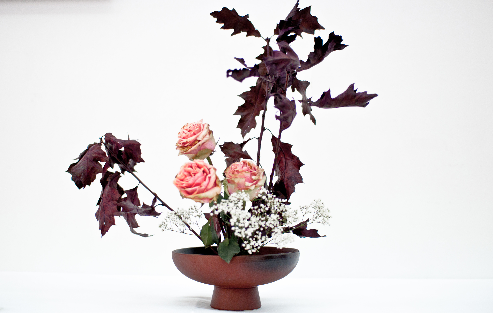

Nature
 Flower arranging is a beautiful and timeless art form that has captivated people for centuries. While it may seem like a simple task to put together a bouquet of flowers, creating a truly stunning arrangement takes skill, creativity, and a deep appreciation for the beauty of nature.
Flower arranging is a beautiful and timeless art form that has captivated people for centuries. While it may seem like a simple task to put together a bouquet of flowers, creating a truly stunning arrangement takes skill, creativity, and a deep appreciation for the beauty of nature.
Nature provides endless inspiration for flower arranging enthusiasts, and by tapping into its beauty and diversity, you can take your skills to the next level. Flower shapes, for instance, offer endless possibilities for stunning floral arrangements. The curves and contours of petals, stamens, and other floral parts can be incorporated into breathtaking designs. For instance, you can use long, flowing stems to create cascading arrangements or round, tightly packed flowers to create compact designs.
In addition to flower shapes, the colors and textures of foliage provide a rich source of inspiration for designers. You can use the lush green of leaves, the delicate fuzz of stems, and the vibrant hues of autumn leaves to create beautiful and unique arrangements. The contrast of green and brown foliage can also be used to add depth and interest to your floral designs.
Changing seasons are another excellent source of inspiration for flower arrangers. Different flowers and foliage come into season at different times of the year, and by taking advantage of these changes, you can create arrangements that reflect the beauty of each season. For instance, you can use the bright and cheerful colors of spring flowers to create uplifting designs or the warm, earthy tones of autumn leaves to evoke a sense of comfort and coziness.
Finally, the natural environment provides a powerful source of inspiration for flower arrangers. Whether it is the rugged beauty of a mountain range or the tranquil setting of a woodland glade, nature offers a wealth of possibilities for creative floral arrangements. For instance, you can use natural elements such as stones, twigs, and bark to add texture and interest to your designs, or you can incorporate wildflowers and grasses to create a natural, organic feel.
By drawing inspiration from nature, you can develop your own unique style of flower arranging that reflects your personality and creativity. Whether you are a beginner or an experienced arranger, exploring the beauty and diversity of nature can help you take your skills to the next level.
Cultural and Historical Tradition
Flower arranging has been an integral part of religious and cultural ceremonies for centuries. Flowers have been used to adorn religious shrines, altars, and other sacred spaces to evoke a sense of purity and holiness. For example, flower offerings play a central role in Hindu temple worship, where they are used to represent different deities and convey different spiritual meanings. Similarly, flowers have been used in traditional Chinese art and culture for centuries, with each flower symbolizing different virtues and values. The lotus flower, for example, represents purity and perfection, while the chrysanthemum symbolizes longevity and vitality.
Apart from religious and cultural ceremonies, traditional cultural arrangements from different parts of the world have been passed down from generation to generation and continue to inspire designers today. These arrangements often incorporate unique cultural symbols and motifs, and can provide a window into the history and traditions of different cultures. For instance, the Japanese art of ikebana has a long and rich history, dating back to the 7th century. Ikebana emphasizes minimalism and simplicity, with each flower and stem carefully arranged to create a balanced and harmonious composition.
By studying and incorporating traditional cultural arrangements into their work, flower arrangers can expand their creative repertoire and gain a deeper understanding of the cultural significance of flowers. They can learn about the meaning and symbolism behind different flowers and motifs, and use this knowledge to create arrangements that are both beautiful and meaningful. In doing so, they can also pay homage to the rich cultural heritage of different communities around the world.
Modern Art and Design
 Flower arranging is not limited to traditional styles and themes. With the rise of contemporary art and design, flower arranging has become a means of self-expression that incorporates elements from various artistic movements. For instance, designers can draw inspiration from the bold and graphic forms of Pop Art, or the fluid shapes and colors of Abstract Expressionism, to create arrangements that challenge the boundaries of traditional floral design. Modern design, with its emphasis on simplicity, functionality, and minimalism, has also had an impact on flower arranging. The clean lines and geometric shapes of modern design can be incorporated into arrangements to create a contemporary, streamlined look.
Moreover, innovative and thought-provoking arrangements can push the limits of creativity, inspiring designers to create arrangements that are not only aesthetically pleasing but also intellectually stimulating. For example, arrangements that explore themes such as social justice, environmental conservation, or cultural diversity can challenge the viewer's perceptions and provoke thought. By incorporating such themes into their work, designers can use flower arranging as a medium for social commentary and critique.
In conclusion, by drawing inspiration from modern art and design, flower arrangers can expand their creative horizons and explore new possibilities for self-expression. Incorporating contemporary styles and themes into traditional floral design can create arrangements that are not only visually striking but also culturally relevant and socially meaningful. With an open mind and a willingness to experiment, designers can take their flower arranging skills to the next level and create works of art that inspire and delight.